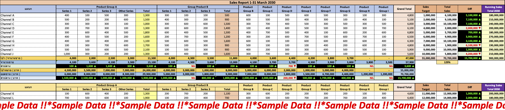

1.1 Sales Report by Channel (B2B), Categorized by Product Category
Table : รายงานยอดขายแต่ละช่องทาง (B2B) แบ่งตามหมวดหมู่สินค้า สะสมทุกวันจนถึงสินเดือนแต่ละเดือน
 Open
Open

Table of Contents
สวัสดีครับ ทั้งหมดนี้จะเป็นผลงานที่ผมได้ทำในตำแหน่ง Data Analyst ที่บริษัท Leowood Intertrade Co Ltd. 📍 ซึ่งเป็นข้อมูลที่ Mockup ขึ้นมาทั้งหมด ไม่ใช่ข้อมูลจริง มีจุดประสงค์เพื่อแสดงทักษะเท่านั้นครับ
เริ่มต้นด้วยการสร้างรายงานและแดชบอร์ดของบริษัทที่ขายให้กับลูกค้า B2B (Business to Business) กันครับ
Table : รายงานยอดขายแต่ละช่องทาง (B2B) แบ่งตามหมวดหมู่สินค้า สะสมทุกวันจนถึงสินเดือนแต่ละเดือน
Open
Table : แสดงยอดขาย (ตามเขตพื้นที่การดูแล) 1-31 มีนาคม 2030 สะสมทุกวันจนถึงสินเดือนแต่ละเดือน
Open
Bar Chart : แสดงยอดขาย (ตามเขตพื้นที่การดูแล) 1-31 มีนาคม 2030
Open
Table : รายงานยอดขายสินค้ากลุ่มพิเศษ 1-31 มีนาคม 2030 (เทียบมีนาคม 2029 สะสมทุกวันจนถึงสินเดือนแต่ละเดือน)
Open
Table : แสดงภาพรวม ยอดขายจริง, ยอดขายค้างส่ง และยอดขายที่อยู่ระหว่างจัดส่ง (วันที่ 1-31 มีนาคม 2030 สะสมทุกวันจนถึงสินเดือนแต่ละเดือน)
Open
Table : สรุปยอดขายจริง (รวมยอดค้างส่งและยอดที่กำลังจัดส่ง) เปรียบเทียบกับเป้าหมายและยอดขายวันก่อนหน้า (เดือนมีนาคม 2030 สะสมทุกวันจนถึงสินเดือนแต่ละเดือน)
Open
Table : สรุปยอดขายแต่ละเซลส์ช่องทาง D (1-31 มีนาคม 2030 สะสมทุกวันจนถึงสินเดือนแต่ละเดือน)
Open
Dashboard : แสดงภาพรวมยอดขายของบริษัทให้กับลูกค้า B2B (1-31 สิงหาคม 2025 สะสมทุกวันจนถึงสินเดือนแต่ละเดือน)
 Open
Open
ต่อไปนี้เป็นการสร้างรายงานและแดชบอร์ดของบริษัทที่ขายให้กับลูกค้า B2C (Business to Customer) ครับ
Dashboard : แสดงภาพรวมยอดขายของบริษัทให้กับลูกค้า B2C ของช่องทางการขาย A (กันยายน - ธันวาคม 2025)
Open
Dashboard : แสดงภาพรวมยอดขายของบริษัทให้กับลูกค้า B2C ของช่องทางการขาย B (ตุลาคม - ธันวาคม 2025)
Open
Dashboard : แสดงภาพรวมยอดขายของบริษัทให้กับลูกค้าแต่ละสาขา B2C ของช่องทางการขาย C (ธันวาคม 2025)
Open
สร้างแดชบอร์ดสำหรับติดตามผลการปฎิบัติงานของพนักงานขายประจำวัน และจัดเตรียมข้อมูลสำหรับการตัดสินใจให้ค่าตอบแทนพิเศษ 6 ข้อรายเดือนให้กับพนักงานขาย
Dashboard : แดชบอร์ดติดตามกิจกรรมประจำวันของทีมขาย และสนับสนุนการตัดสินใจจ่ายค่าตอบแทนพิเศษรายเดือน
Open
Google Shets : Sales Incentive Achievement Summary Report (Mockup Data)
 Open
Open
ประสานงานภายในและภายนอกองค์กร
เพื่อเพิ่มประสิทธิภาพการทำงานร่วมกันระหว่างฝ่ายต่างๆในบริษัท ผมได้จัดทำตารางนัดประชุมประจำไตรมาสกับฝ่ายอื่นๆในบริษัท (ทำเป็นประจำทุกไตรมาส)
ก่อนประชุมใหญ่รายไตรมาส จะมีการประชุมย่อยกับทีมขายเพื่อติดตามการทำงานประจำสัปดาห์ ผมจะเป็นผู้จัดเตรียมข้อมูลและนัดหมายการประชุมกับทีมขาย และการตลาด ต้องมีข้อมูลอย่างน้อยตาม 4 หัวข้อย่อยด้านล่าง (ทำเป็นประจำทุกสัปดาห์)
Weekly Monitor : รายงานจำนวนขายสินค้าประจำสัปดาห์ เทียบกับเป้าหมาย (ด้านล่างจะเป็น Template รายงานของแต่ละ Channel A, B, ..)
Open
Weekly Monitor : สรุปจำนวนขายสินค้าประจำสัปดาห์ แยกตามช่องทางการขาย (Channel A, B, ..)
Open
Weekly Monitor : เปรียบเทียบยอดขายสินค้าประจำสัปดาห์ ระหว่างยอดขายเข้าร้าน (Sell-In) กับยอดขายออกจากร้าน (Sell-Out)
Open
Weekly Monitor : สรุปภาพรวมยอดขายสะสมทุกๆสัปดาห์ ของช่องทางการขาย B2B (ช่องทางหลัก)
Open
มันเป็นเรื่องท้าทายที่จะเก็บข้อมูลยอดขายสินค้าและเลขสต็อกสินค้า ของลูกค้าที่กระจายอยู่ทั่วประเทศ (เราเป็นบริษัทขายส่ง B2B เป็นหลัก) แต่เนื่องด้วยช่องทาง B มีพนักงานแนะนำสินค้า (Product Consultant - PC) ประจำอยู่ที่หน้าร้านของลูกค้า เราจึงสามารเก็บข้อมูลลง Google Sheets ได้ โดยให้พนักงาน PC เป็นผู้กรอกข้อมูลยอดขายและสถานะการทำงานของตนเองในแต่ละวัน จึงเป็นหน้าที่ของผมที่ดูแล Sheets นี้ทั้งหมด และอบรมพนักงานใหม่ PC ให้สามารถกรอกข้อมูลได้อย่างถูกต้อง
อธิบายแผ่นงานชีต ในรูปด้านบน
Work Status เดือน 3 - Sheet 1 :Work Status เดือน 4 - Sheet 2 :ยอดขาย ผูก Looker :Customer 1,2, .. :งานอื่นๆที่ได้รับมอบหมายเพิ่มเติม
Dashboard : แสดงภาพรวมยอดขายของบริษัทให้กับลูกค้า B2B รายจังหวัด (3 ปีย้อนหลัง)
Open
Table : Template สำหรับเก็บรวบรวมแผน/ตัวเลข เป้าการขายแต่ละช่องทาง เพื่อนำมาเปรียบเทียบยอดขายแต่ละช่วงเวลา (ทำเป็นประจำทุกเดือน) เพื่อนำไปรายงานใน Dashboard ช่องทาง B2B หัวข้อที่ 1 และ 4.2
Open

จัดเตรียมข้อมูลสนับสนุนทีมภายในบริษัท พร้อมส่งมอบให้ตรงเวลา (เก็บสะสมข้อมูลเป็นประจำทุกเดือน)
Table : เก็บข้อมูลยอดขายของลูกค้าเดิม/ใหม่ ของ Channel A ทุกเดือน
Open
Table : เก็บข้อมูลยอดขายของพนักงานขายของ Channel A
Open
Table : เก็บข้อมูลยอดขาย In ของลูกค้า Channel B
Open
Table : เก็บ/อัพเดท รายชื่อลูกค้าใหม่/เก่า ของ Channel A (ทำเป็นประจำทุกเดือน)
Open
Table : เก็บ/อัพเดท โซนการดูแลของพนักงานขายแต่ละสาขา/ร้านค้า ของ Channel B, C, D (ทำเป็นประจำทุกเดือน)
Open
Presentation : ส่งมอบให้กับทีมการตลาดและฝ่ายขาย เพื่อใช้ในการวางแผนการขายและการตลาด
Open
Dashboard : สำรวจแนวโน้มยอดขายของ Channel D
Dashboard : สำรวจแนวโน้มยอดขายของ Channel A
ด้านล่างนี้จะเป็นตัวอย่างไฟล์งานนำเสนอ
Presentation : Sample Q1 Sales Closing and Sales Performance Presentation (Overview Sales)
Open
Presentation : Sample Q1 Sales Closing and Sales Performance Presentation (Overview Sales Project) - Channel E
Open
 รวมไฟล์ในหน้านี้ Google Drive ✅
รวมไฟล์ในหน้านี้ Google Drive ✅
 ใบรับรองการทำงาน (Certificate of Employment (COE) ✅)
ใบรับรองการทำงาน (Certificate of Employment (COE) ✅)
 ใบประเมินผลการปฎิบัติงาน 120 วัน (Probation Completion Form ✅)
ใบประเมินผลการปฎิบัติงาน 120 วัน (Probation Completion Form ✅)